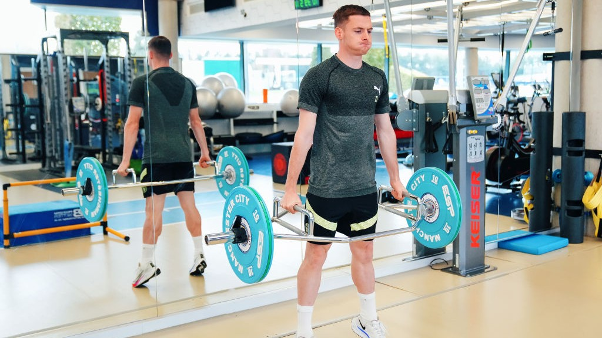

People always ask me what a normal week looks like for me out here in Madrid. Between training with my local club, going to university classes online for my computer science degree, and making sure I'm eating and sleeping right, my days are pretty structured. I figured it was time to actually write it all down.
For a long time I trained like a lot of young players do, just going hard every day and hoping it adds up to something. That changed when I started following a proper periodized plan based on a soccer-specific training guide I found, which breaks the year into phases instead of treating every week the same. It completely shifted how I think about my training.
The big idea is simple: you don't train the same way all year round. There's a time to build muscle, a time to convert that strength into explosive power, and a time to simply maintain it so you're fresh for matches. Trying to max out your lifts in the middle of the season is a recipe for burnout, or worse, injury.
Right now I'm in a phase where I'm building strength and correcting old imbalances (largely thanks to everything I learned during my knee rehab), so here's roughly what my week looks like:
I lift at least three days a week, non-negotiable. My sessions are built around compound, multi-joint lifts:
Weekday Technical Sessions Outside the gym days, I'm training with my local club here in Madrid, working on technical and tactical elements: passing patterns, finishing, small-sided games, positional play. This is where the actual "soccer" happens, the gym work is in service of this, not separate from it.
Match Days This is what the entire week builds toward. I play with my local team on the weekends, and by the time Saturday or Sunday comes around, I want my legs feeling sharp, not fried from a heavy lift the day before. That's why I always schedule my heaviest gym sessions a couple of days out from match day, never the day before.
The Part I Used to Skip I used to treat recovery as optional. Not anymore. That means:
The honest truth is that studying computer science online while training full-time abroad forces a level of time management I didn't have at 17. My classes happen around my training blocks, early mornings or evenings after sessions, and if anything, having a tightly structured day has made me more disciplined as both a student and a player. There's no room for wasted hours when your schedule is this packed.
I'm not training like this because I think it's fun (some days the gym is the last place I want to be). I'm doing it because every rep, every recovery session, every hour of sleep is one more brick in a foundation I'm building toward something specific. And that "something" is the subject of my next post.
Disciplined on the pitch, disciplined in the gym, disciplined with the books.